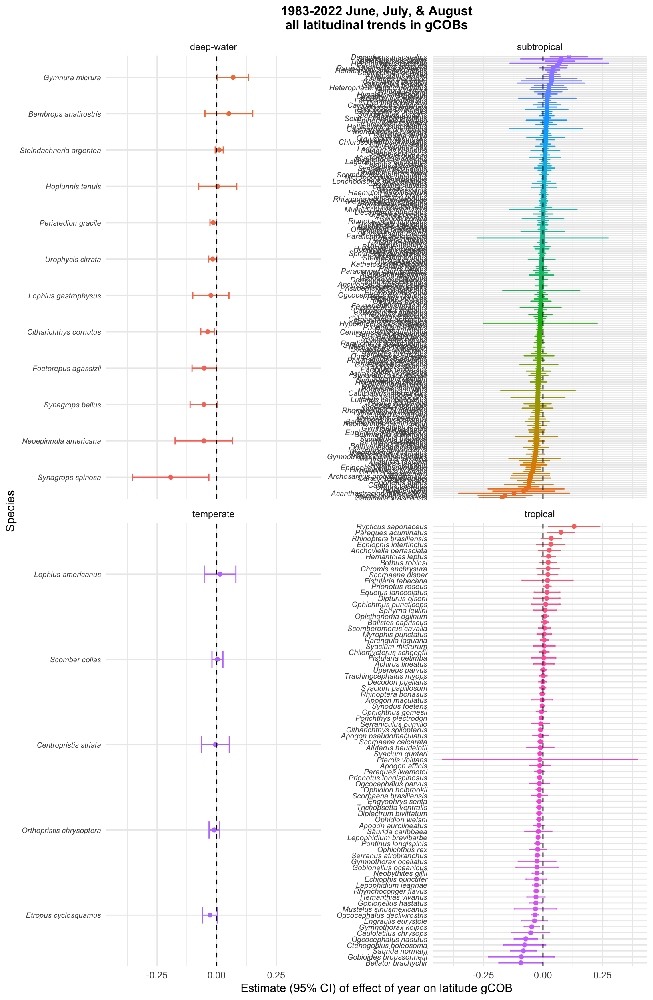
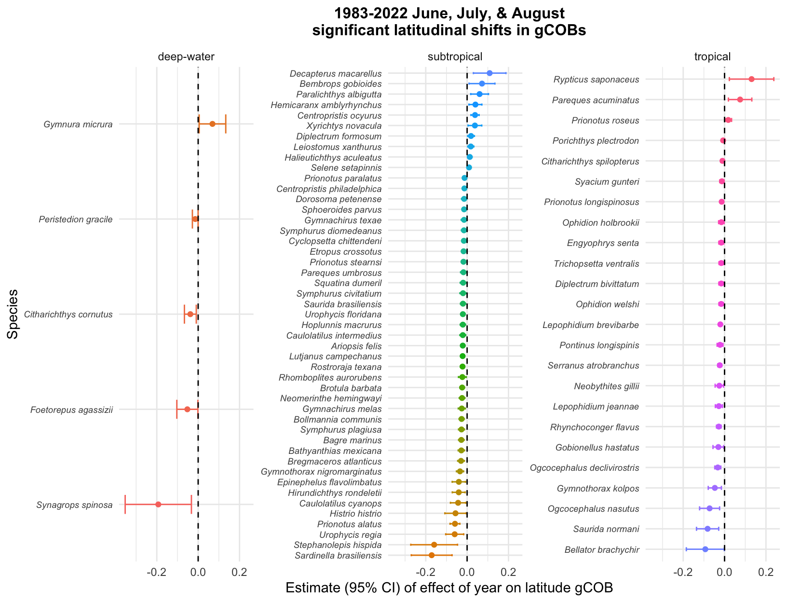
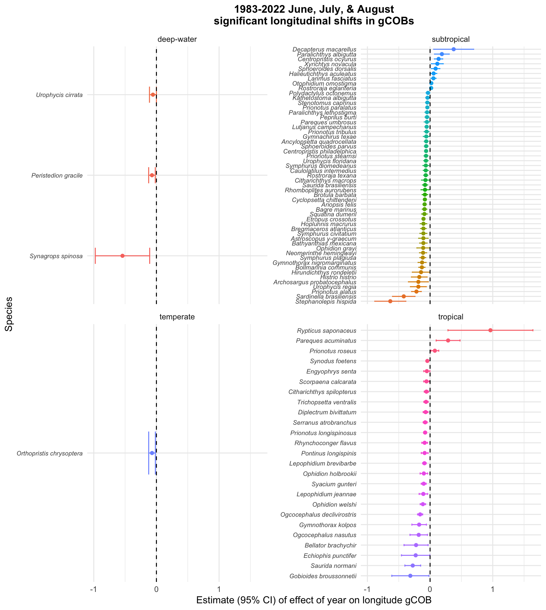

Analysis of SEAMAP data for the western GoM for all years (1983 - 2022) and summer sampling months of June, July, and August
Tropicalization of Gulf of Mexico Fish Communities
Analysis of SEAMAP Trawl Data
Data Subset: western GoM stations for summer trawls (June, July, August) in years 1983 - 2022
Number of trawl stations sampled each year
Table 1. Number of trawl stations for each year of data and the fall months during which sampling took place.
| year | # of trawls | months |
|---|---|---|
| 1983 | 381 | 8; 6; 7 |
| 1984 | 291 | 6; 7; 8 |
| 1985 | 404 | 6; 7; 8 |
| 1986 | 270 | 6; 7 |
| 1987 | 652 | 6; 7 |
| 1988 | 542 | 6; 7 |
| 1989 | 389 | 6; 7 |
| 1990 | 435 | 6; 7; 8 |
| 1991 | 418 | 6; 7 |
| 1992 | 407 | 7; 6 |
| 1993 | 444 | 8; 6; 7 |
| 1994 | 394 | 6; 7; 8 |
| 1995 | 370 | 6; 8; 7 |
| 1996 | 374 | 7; 6; 8 |
| 1997 | 371 | 6; 7; 8 |
| 1998 | 335 | 6; 7 |
| 1999 | 377 | 6; 7; 8 |
| 2000 | 377 | 6; 7 |
| 2001 | 269 | 7; 6 |
| 2002 | 372 | 6; 7 |
| 2003 | 303 | 6; 7 |
| 2004 | 363 | 6; 7 |
| 2005 | 300 | 6; 7; 8 |
| 2006 | 375 | 6; 7; 8 |
| 2007 | 353 | 6; 7; 8 |
| 2008 | 377 | 6; 8; 7 |
| 2009 | 476 | 6; 8; 7 |
| 2010 | 319 | 6; 8; 7 |
| 2011 | 265 | 6; 7 |
| 2012 | 293 | 6; 7 |
| 2013 | 250 | 7; 6 |
| 2014 | 259 | 6; 7 |
| 2015 | 188 | 6; 7 |
| 2016 | 179 | 6; 7 |
| 2017 | 178 | 6; 7 |
| 2018 | 149 | 6; 7 |
| 2019 | 166 | 6; 7 |
| 2021 | 127 | 6; 7 |
| 2022 | 133 | 6; 8 |
Map of trawl stations
Figure 1. Trawl sampling locations for the western GoM for each year of data collection for this subset of data (1983-2022 summer sampling in months of June, July, and August).
There are 513 fish species that were caught in trawls in this subset of data.
Of those 513 fish species, only 294 of them had gCOB values for at least 5 years. For these fish species, linear models were constructed to test if their latitude and longitude gCOBs had shifted over time.
Table 2. The number of fish species that have significantly shifted latitudinally or longitudinally based upon their gCOBs.
| climate zone | n | significant latitude shift | North shifted | South shifted | significant longitude shift | West shifted | East shifted |
|---|---|---|---|---|---|---|---|
| deep-water | 12 | 5 | 1 | 4 | 3 | 3 | 0 |
| subtropical | 203 | 47 | 10 | 37 | 53 | 44 | 9 |
| temperate | 5 | 0 | 0 | 0 | 1 | 1 | 0 |
| tropical | 74 | 24 | 3 | 21 | 25 | 22 | 3 |
Table 3. The tropical fish species that have significantly shifted their geographical center of biomass (gCOB) over time.
| index | north | south | west | east |
|---|---|---|---|---|
| 1 | Pareques acuminatus | Bellator brachychir | Bellator brachychir | Pareques acuminatus |
| 2 | Prionotus roseus | Citharichthys spilopterus | Citharichthys spilopterus | Prionotus roseus |
| 3 | Rypticus saponaceus | Diplectrum bivittatum | Diplectrum bivittatum | Rypticus saponaceus |
| 4 | Engyophrys senta | Echiophis punctifer | ||
| 5 | Gobionellus hastatus | Engyophrys senta | ||
| 6 | Gymnothorax kolpos | Gobioides broussonnetii | ||
| 7 | Lepophidium brevibarbe | Gymnothorax kolpos | ||
| 8 | Lepophidium jeannae | Lepophidium brevibarbe | ||
| 9 | Neobythites gillii | Lepophidium jeannae | ||
| 10 | Ogcocephalus declivirostris | Ogcocephalus declivirostris | ||
| 11 | Ogcocephalus nasutus | Ogcocephalus nasutus | ||
| 12 | Ophidion holbrookii | Ophidion holbrookii | ||
| 13 | Ophidion welshi | Ophidion welshi | ||
| 14 | Pontinus longispinis | Pontinus longispinis | ||
| 15 | Porichthys plectrodon | Prionotus longispinosus | ||
| 16 | Prionotus longispinosus | Rhynchoconger flavus | ||
| 17 | Rhynchoconger flavus | Saurida normani | ||
| 18 | Saurida normani | Scorpaena calcarata | ||
| 19 | Serranus atrobranchus | Serranus atrobranchus | ||
| 20 | Syacium gunteri | Syacium gunteri | ||
| 21 | Trichopsetta ventralis | Synodus foetens | ||
| 22 | Trichopsetta ventralis |
Table 4. The subtropical fish species that have significantly shifted their geographical center of biomass (gCOB) over time.
| index | north | south | west | east |
|---|---|---|---|---|
| 1 | Bembrops gobioides | Ariopsis felis | Ancylopsetta quadrocellata | Centropristis ocyurus |
| 2 | Centropristis ocyurus | Bagre marinus | Archosargus probatocephalus | Decapterus macarellus |
| 3 | Decapterus macarellus | Bathyanthias mexicana | Ariopsis felis | Halieutichthys aculeatus |
| 4 | Diplectrum formosum | Bollmannia communis | Astroscopus y-graecum | Larimus fasciatus |
| 5 | Halieutichthys aculeatus | Bregmaceros atlanticus | Bagre marinus | Otophidium omostigma |
| 6 | Hemicaranx amblyrhynchus | Brotula barbata | Bathyanthias mexicana | Paralichthys albigutta |
| 7 | Leiostomus xanthurus | Caulolatilus cyanops | Bollmannia communis | Rostroraja eglanteria |
| 8 | Paralichthys albigutta | Caulolatilus intermedius | Bregmaceros atlanticus | Sphoeroides dorsalis |
| 9 | Selene setapinnis | Centropristis philadelphica | Brotula barbata | Xyrichtys novacula |
| 10 | Xyrichtys novacula | Cyclopsetta chittendeni | Caulolatilus intermedius | |
| 11 | Dorosoma petenense | Centropristis philadelphica | ||
| 12 | Epinephelus flavolimbatus | Citharichthys macrops | ||
| 13 | Etropus crossotus | Cyclopsetta chittendeni | ||
| 14 | Gymnachirus melas | Etropus crossotus | ||
| 15 | Gymnachirus texae | Gymnachirus texae | ||
| 16 | Gymnothorax nigromarginatus | Gymnothorax nigromarginatus | ||
| 17 | Hirundichthys rondeletii | Hirundichthys rondeletii | ||
| 18 | Histrio histrio | Histrio histrio | ||
| 19 | Hoplunnis macrurus | Hoplunnis macrurus | ||
| 20 | Lutjanus campechanus | Kathetostoma albigutta | ||
| 21 | Neomerinthe hemingwayi | Lutjanus campechanus | ||
| 22 | Pareques umbrosus | Neomerinthe hemingwayi | ||
| 23 | Prionotus alatus | Ophidion grayi | ||
| 24 | Prionotus paralatus | Paralichthys lethostigma | ||
| 25 | Prionotus stearnsi | Pareques umbrosus | ||
| 26 | Rhomboplites aurorubens | Peprilus burti | ||
| 27 | Rostroraja texana | Polydactylus octonemus | ||
| 28 | Sardinella brasiliensis | Prionotus alatus | ||
| 29 | Saurida brasiliensis | Prionotus paralatus | ||
| 30 | Sphoeroides parvus | Prionotus stearnsi | ||
| 31 | Squatina dumeril | Prionotus tribulus | ||
| 32 | Stephanolepis hispida | Rhomboplites aurorubens | ||
| 33 | Symphurus civitatium | Rostroraja texana | ||
| 34 | Symphurus diomedeanus | Sardinella brasiliensis | ||
| 35 | Symphurus plagiusa | Saurida brasiliensis | ||
| 36 | Urophycis floridana | Sphoeroides parvus | ||
| 37 | Urophycis regia | Squatina dumeril | ||
| 38 | Stenotomus caprinus | |||
| 39 | Stephanolepis hispida | |||
| 40 | Symphurus civitatium | |||
| 41 | Symphurus diomedeanus | |||
| 42 | Symphurus plagiusa | |||
| 43 | Urophycis floridana | |||
| 44 | Urophycis regia |
Table 5. The temperate fish species that have significantly shifted their geographical center of biomass (gCOB) over time.
| index | north | south | west | east |
|---|---|---|---|---|
| 1 | Orthopristis chrysoptera |
Table 6. The deep-water fish species that have significantly shifted their geographical center of biomass (gCOB) over time.
| index | north | south | west | east |
|---|---|---|---|---|
| 1 | Gymnura micrura | Citharichthys cornutus | Peristedion gracile | |
| 2 | Foetorepus agassizii | Synagrops spinosa | ||
| 3 | Peristedion gracile | Urophycis cirrata | ||
| 4 | Synagrops spinosa |

Figure 2. Latitudinal trends in gCOBs for fish species (deep-water, subtropical, temperate, tropical).
Figure 3. Longitudinal trends in gCOBs for fish species (deep-water, subtropical, temperate, tropical).

Figure 4. Latitudinal trends in gCOBs for fish species (deep-water, subtropical, tropical) with a significant shift over time. No temperate fish species exhibited a significant shift in latitude gCOB.

Figure 5. Longitudinal trends in gCOBs for fish species (deep-water, subtropical, temperate, tropical) with a significant shift over time.